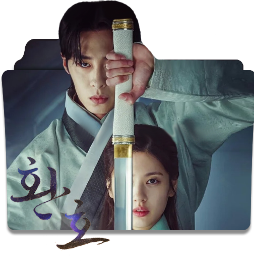

Boys Over Flowers
Geum Jan Di, es una chica humilde cuya familia es propietaria de una tintorería. Un día mientras realiza una entrega para un estudiante de la prestigiosa Escuela Superior Shin Hwa, (escuela para ricos). Ella se percata que el chico iba a suicidarse desde la azotea por obtener la tarjeta roja de los F4 y justo en el preciso momento en el que salta, Geum Jan Di le salva la vida al detenerlo y es llamada como la chica/mujer maravilla.
Wang Soo es heredero del Emperador. Él no quiere estar en el centro de atención, pero nace de forma natural en la realeza. Su personalidad es tan fría como el hielo. Hae Soo, quien se encuentra en el tiempo actual, debido a un accidente inesperado termina viajando de regreso a la época histórica. Hae Soo se las arregla para sobrevivir en ese tiempo sin embargo debido a su personalidad y diversas situaciones terminará involucrada con los diferentes príncipes.
El drama cuenta la historia de 4 personas que cambian de almas, luego de enfrentarse a espíritus celestiales. En el país de Daeho, Jang Wook proviene de la noble familia Jang. Guarda un desagradable secreto sobre su nacimiento, del que habla la gente de todo el país. El es alborotador pero regresa al camino correcto en la vida después de conocer a Mu Deok Yi, ella es una guerrera de élite, pero su alma está atrapada en un cuerpo físicamente débil. Ella se convierte en la sirvienta de Jang Wook, pero también le enseña en secreto cómo pelear, aumentando la expectativa por su química como maestro y alumno. Seo Youl proviene de la noble familia Seo.
True Beauty

Im Joo-Kyeong es un estudiante de secundaria. Desde que era pequeña, ha tenido un complejo sobre su apariencia. Para ocultar su rostro desnudo, Im Joo-Kyeong siempre usa maquillaje.

Lee Min Ho
Im Joo-Kyeong es un estudiante de secundaria. Desde que era pequeña, ha tenido un complejo sobre su apariencia. Para ocultar su rostro desnudo, Im Joo-Kyeong siempre usa maquillaje.
Business Proposal

Im Joo-Kyeong es un estudiante de secundaria. Desde que era pequeña, ha tenido un complejo sobre su apariencia. Para ocultar su rostro desnudo, Im Joo-Kyeong siempre usa maquillaje.